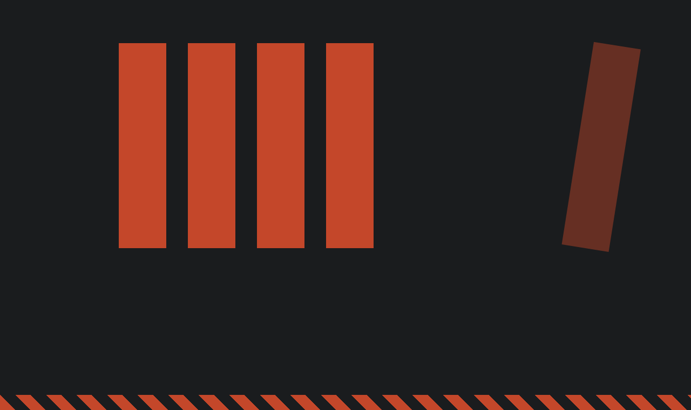

Why individual therapy alone often can't do what a room full of other men can.
August 30, 2026 · Brian Mulligan, LPCC, CAT

Group therapy is often looked at as the younger sibling of individual therapy - sure, it's part of the family, but it doesn't pull the same weight. Despite that last statement being empirically untrue, the fallacious perception of group therapy as being in some way inferior and less efficacious than individual therapy remains commonplace in our society.
There are a lot of explanations as to how this view of group therapy was adopted - by practicing therapists and laypeople alike - but what's not talked about enough is how the devaluation of group therapy has impacted those who could benefit from it most.
To understand, reader, a few things must first be made abundantly clear:
And it really isn't subject to dispute. On the whole, men's mental health in this country has taken a precipitous nosedive over the last several decades. Suicide rates, male depression, and loneliness are at all-time highs. Men are reporting fewer friendships, higher divorce rates, and higher rates of substance misuse. The trend is ominous.
Humans are social creatures. We need other people. The most obvious demonstration of this is to simply witness what happens to someone when they are placed in solitary confinement. Glaringly, recent studies have shown that it doesn't take being stuck in a cell to suffer the cost of isolation - simply being stuck at home alone with no one to talk to has striking implications.
Yet, men are socialized to believe that to depend on another person is a sort of death-knell. We are immersed in messaging starting when we are just boys that tells us in order to really "grow up", we must be self-sufficient. This means you figure it out yourself. This means you don't ask for help. This means you don't risk showing anyone that you don't really know what you're doing.
The problem with the internalization of this type of constrained masculine identity is that it's not particularly conducive to building healthy relationships. Men and women both value certain qualities in relationships - things like safety, trust, openness and a sense of relatedness or mutuality. What's not on the list is being perfect.
You can see where this is heading.
In his book "Beyond the Crisis of Masculinity - A Transtheoretical Model", Dr. Gary Brooks writes, "Men's loneliness is one of their most closely guarded secrets because it often hides behind a facade of social connectedness and public camaraderie… men tend to have friendships characterized by shared activities, whereas women are more likely to have friendships characterized by interpersonal intimacy and discussion of feelings." (p. 22). Women tend to have pre-installed opportunities to socialize with one another. Book clubs, lunch dates, estate sales, group dinners - these are normative, expected and encouraged among groups of women friends. I can't imagine what kind of response I would get from my male friends if I asked them if they'd be interested in going out for tea.
When men get together, the focus is usually not on anything personal or emotional, but on a shared activity or task. Sure, men talk, but it's usually about a new swing thought with your driver or what the forecast is for the Broncos' running back room this year.
So where do men get vulnerable? For most men, there appear to be two options: you can talk to your partner, or you can go to AA. Some men take a brave step and start individual therapy, typically with a female therapist, because that's who's out there.
Before I am misperceived: there's nothing inherently wrong or bad about a man seeing a female clinician. In fact, it can be incredibly healing. However, I have been witness to a widespread pattern of men that seek out female therapists specifically, and I speculate that these men view the prospect of being vulnerable with another man as threatening and unsafe (perhaps for reasons that make perfect sense for them). And yet, in some situations I wonder whether doing so further entrenches gender roles and perceptions that we would be better off breaking - for instance, a man who sees a female therapist who believes, "I can only be vulnerable and share my feelings with women", may not be disabused of this relationally-limiting schema.
Put more succinctly: there is a problem with using your therapist as an emotional stand-in for your wife. Good therapists will point this out and address it, but sadly, many won't.
Process groups allow men to experience a different type of relationship with other men. It opens up the possibility of intimacy, which men conflate with romance and sex all too often. Trust, vulnerability, care, and even love can be expressed in the group, none of which needs to be smuggled in under the cover of a shared activity. It offers men a way to move past the "buddy" or "bro" archetype that has quietly defined most of their relationships with other men since adolescence, and into something with actual depth. It asks them to drop the guardedness that weighs on them day after day, often so consistently that they no longer notice they are carrying it. And it requires confronting, directly, the fear that has organized so much of male behavior since boyhood: the fear of being perceived as weak, incompetent, insufficient, or unworthy.
This does not happen easily, and it does not happen quickly. In a room of other men, that fear has nowhere left to hide. There is no task to retreat into, no shared activity to talk around the actual subject. There is only the room, and the men in it, and the slow, uncomfortable process of being known.
What most men discover, often to their own surprise, is that vulnerability does not produce the outcome they spent a lifetime avoiding. Nobody laughs. Nobody leaves. If anything, the opposite tends to happen: the group grows more honest, more genuinely connected, the moment someone stops performing and starts telling the truth.
Men's mental health did not decline because men are somehow deficient. It declined because the structures that once provided belonging, honesty, and mutual accountability have quietly disappeared, and nothing has taken their place. Individual therapy can accomplish a great deal, but it cannot fully replicate the specific experience of being seen, challenged, and accepted by other men, in real time, without an agenda.
That is what a group provides. Not a support group in the softened, diluted sense of the term, but a room where men do the difficult work of relating to one another honestly, in many cases for the first time in their adult lives.
If any of this sounds familiar, reader, I'd invite you to consider joining one. If you're a provider, ask yourself if your clients could benefit from joining a men's group - and if so, encourage them to join. My men's process groups meet virtually on Mondays and Thursdays at 6:30pm, and there is currently room for new members. I would be glad to talk with you about whether it's the right fit.
Join a Men's Group →American Psychological Association, Boys and Men Guidelines Group. (2018). APA guidelines for psychological practice with boys and men. https://www.apa.org/about/policy/boys-men-practice-guidelines.pdf
Brooks, G. R. (2010). Beyond the crisis of masculinity: A transtheoretical model for male-friendly therapy. American Psychological Association. https://doi.org/10.1037/12073-000
Burke, C. K., et al. (2010). Healing men and community: Predictors of outcome in a men's initiatory and support organization. American Journal of Community Psychology, 45(3–4), 386–397. https://pubmed.ncbi.nlm.nih.gov/20094770
Chowdhury, D., et al. (2026). Loneliness without an epidemic: Gendered pathways, health consequences, and intervention gaps among men in the United States. Frontiers in Public Health. https://pubmed.ncbi.nlm.nih.gov/42311990
Cuijpers, P., Noma, H., Karyotaki, E., Cipriani, A., & Furukawa, T. A. (2019). Effectiveness and acceptability of cognitive behavior therapy delivery formats in adults with depression: A network meta-analysis. JAMA Psychiatry, 76(7), 700–707. https://doi.org/10.1001/jamapsychiatry.2019.0268
David-Barrett, T., et al. (2015). Women favour dyadic relationships, but men prefer clubs: Cross-cultural evidence from social networking. PLoS ONE, 10(3), Article e0118329. https://pubmed.ncbi.nlm.nih.gov/25775258
Fehr, B. (2004). Intimacy expectations in same-sex friendships: A prototype interaction-pattern model. Journal of Personality and Social Psychology, 86(2), 265–284. https://pubmed.ncbi.nlm.nih.gov/14769083
Kealy, D., & Kongerslev, M. T. (2022). Structured group psychotherapies: Advantages, challenges, and possibilities. Journal of Clinical Psychology, 78(8), 1559–1566. https://doi.org/10.1002/jclp.23377
Luigi, M., et al. (2020). Shedding light on "the hole": A systematic review and meta-analysis on adverse psychological effects and mortality following solitary confinement in correctional settings. Frontiers in Psychiatry, 11, Article 840. https://pubmed.ncbi.nlm.nih.gov/32973582
Paul, P. (2026, March 12). Why men struggle to find male therapists. The Wall Street Journal. https://www.wsj.com/health/wellness/male-therapists-psychology-representation-a1650f62
Sharp, P., et al. (2022). "People say men don't talk, well that's bullshit": A focus group study exploring challenges and opportunities for men's mental health promotion. PLoS ONE, 17(12), Article e0261997. https://pubmed.ncbi.nlm.nih.gov/35297130
Twenge, J. M., Cooper, A. B., Joiner, T. E., Duffy, M. E., & Binau, S. G. (2019). Age, period, and cohort trends in mood disorder indicators and suicide-related outcomes in a nationally representative dataset, 2005–2017. Journal of Abnormal Psychology, 128(3), 185–199. https://doi.org/10.1037/abn0000410
U.S. Department of Veterans Affairs & Department of Defense. (2022). VA/DoD clinical practice guideline for the management of major depressive disorder. https://www.healthquality.va.gov/guidelines/MH/mdd/VADODMDDCPGFinal508.pdf
Zhao, Y.-L., et al. (2026). Associations of social isolation and loneliness with neurological disorders, psychiatric disorders, brain structures and behavioural phenotypes among UK Biobank participants. Nature Communications. https://doi.org/10.1038/s41467-026-72529-y